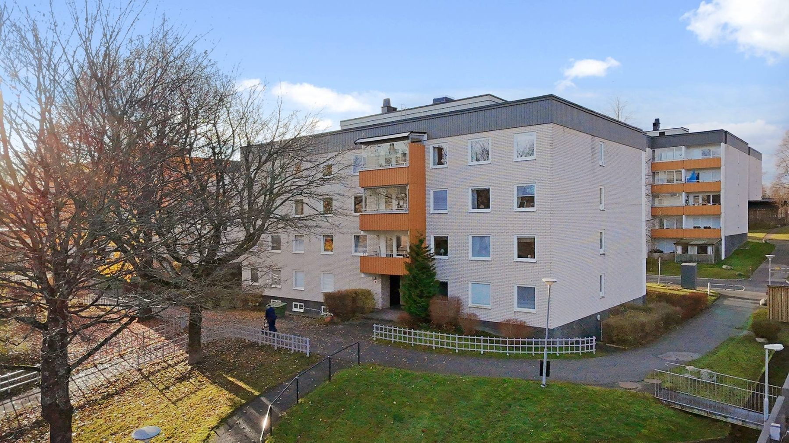

22
Brf
Sågenvägen
Vendelsö
Sågenvägen
Vendelsö
BokaDokumentOmrådetMina sidor
Hej,
grannar!
grannar!
Här sitter anslagstavlan i trappuppgången – fast på nätet. Boka tvättstugan, anmäl fel eller se vad som är på gång i huset.

Vår gård i november
Tvättstugan
MTOTFLS
Ockra = ledigt. Tryck för att boka.
Stamspolning
Hus 16–22 spolas tisdag 18 nov. Vattnet kan vara avstängt kl. 09–12.
– Styrelsen
Något trasigt?
Lampa i trappen, strul med porttelefonen – berätta så fixar vi det.
Gör en felanmälan →

Balkongerna i oktober
Samlingslokalen
Fyller du år eller ska ha möte? Lokalen kan hyras av alla boende.
Se lediga helger →
Papper & protokoll
Stadgar
Årsredovisning
Styrelseprotokoll
Trivselregler
Årsredovisning
Styrelseprotokoll
Trivselregler
Brf Sågenvägen · Sågenvägen 22, 136 71 Vendelsö · 199 lägenheterKontakta styrelsen